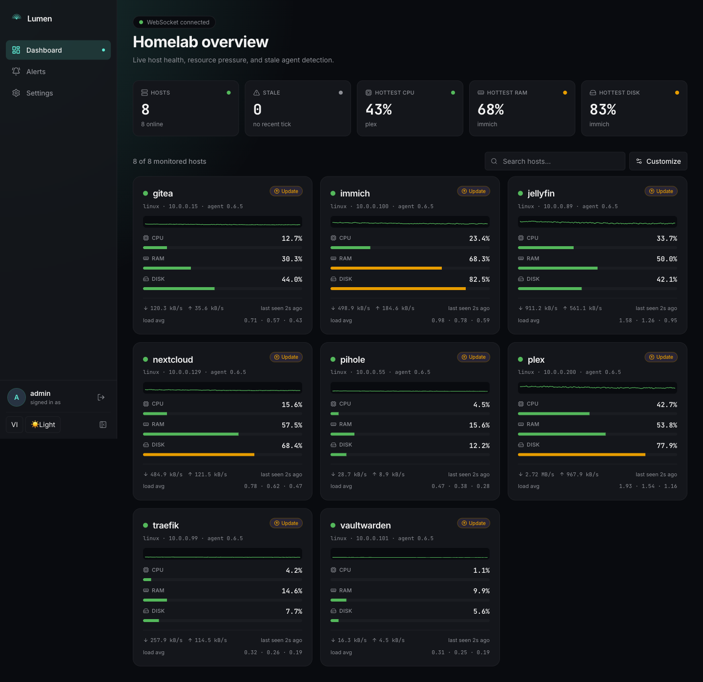
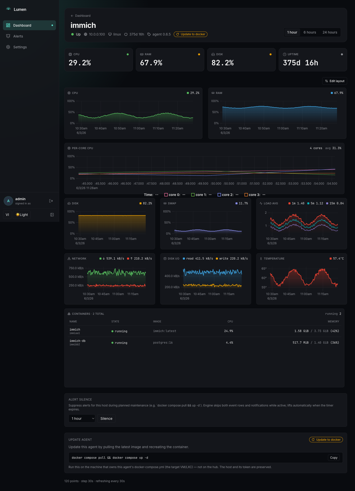
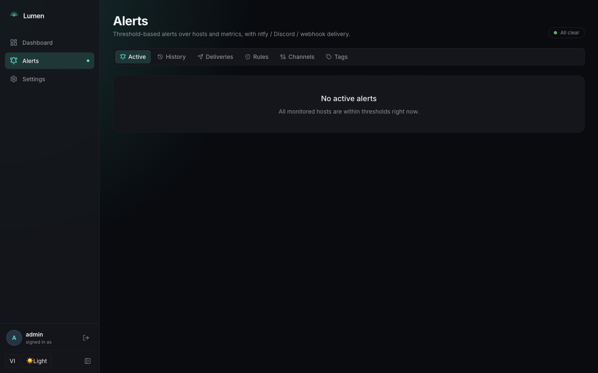
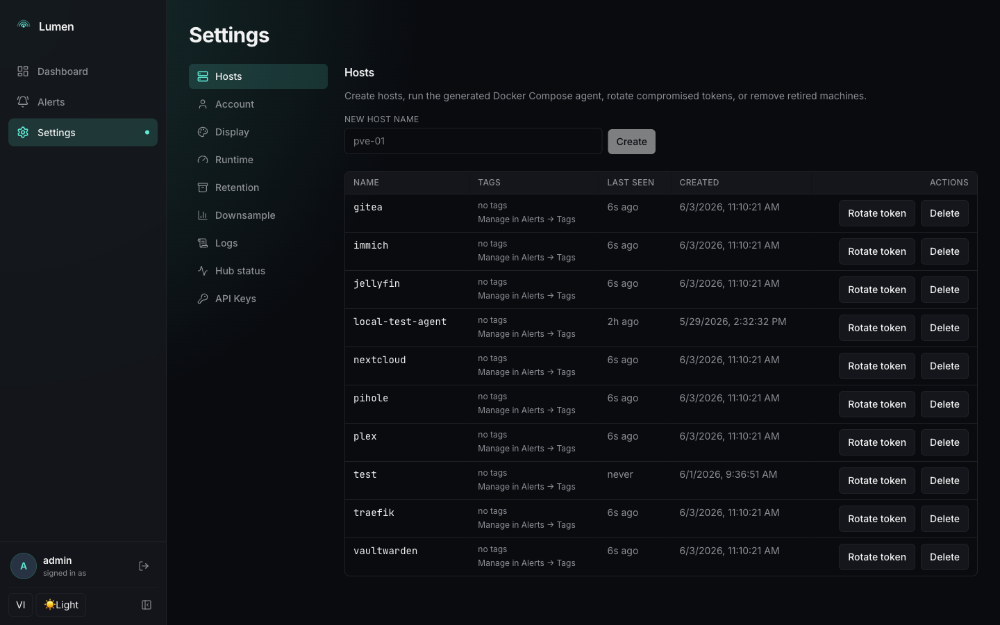
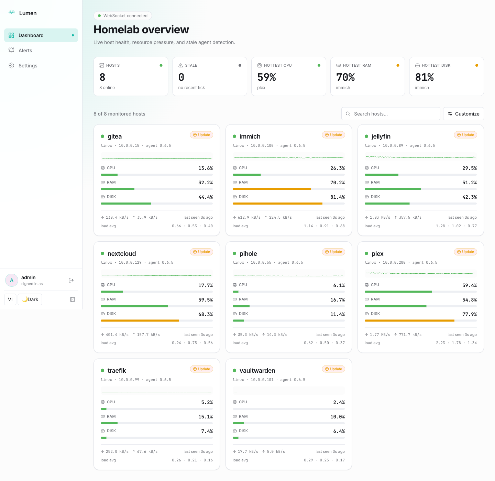
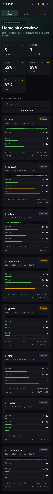

HTTPS-only push transport
Agents push outbound via HTTPS/WebSocket. Works behind any NAT, Cloudflare Tunnel, or Tailscale Funnel. No SSH keys, no inbound ports.
Proxmox-native, HTTPS-only, HDD-friendly. Single Go binary for hub and agent. Comfortable on a Raspberry Pi, ready for a 200-host fleet.
MIT-licensed · No telemetry · No phone-home · Built in the open
A fleet view that fits on one screen. Deep host charts a click away. The same UI on your phone, dark or light.






Every feature serves one of three north-star wedges. No design-by-committee, no enterprise creep.
Agents push outbound via HTTPS/WebSocket. Works behind any NAT, Cloudflare Tunnel, or Tailscale Funnel. No SSH keys, no inbound ports.
Batched 60s flush ring + WAL-tuned SQLite cuts fsync pressure ~100× at fleet scale. Won't grind a Pi's SD card to dust.
Installable to your phone homescreen. App shell paints instantly on cold start. Realtime metrics via WebSocket, even on cellular.
Spin up the hub in under a minute. Mint a host token from the UI, drop the generated per-agent compose file on the target machine, run docker compose up -d. Done.
# Clone the repo git clone https://github.com/quanla93/lumen cd lumen # Bring up the hub docker compose -f deploy/docker/docker-compose.yml up -d # Open the UI open http://localhost:8090
Everything you need to operate a homelab fleet. Nothing you'd skip on the way out.
WebSocket fan-out for live updates; SQLite-backed history with downsampled queries up to 7 days.
Drag, resize, add, and hide charts on any host. Per-user, per-host layouts. Curated 10-chart catalog.
Threshold rules, offline detection. ntfy, Discord, webhook, Telegram, Email (SMTP). Per-rule routing, flap cooldown, per-host silence.
/api/v1/* Bearer-key authenticated endpoints. Scopes, host-glob filter, per-key rate limit. Grafana datasource recipe in docs.
Theme, language, units, reduce-motion, density. Per-user saved views. All synced across browsers.
English and Vietnamese ship in both the web app and Starlight docs. Translation guide for adding more locales.
Live container CPU / RAM / state from the Engine API. Stdlib unix-socket client — no docker/docker SDK bloat.
bbolt-backed durable queue replays on reconnect. Survives hub restarts, network blips, and 24h+ outages.
First-admin register flow. JWT (HS256, 30d). Argon2id password hashing. Per-host bearer tokens you can rotate.
Pre-1.0; breaking changes allowed in minor releases. v1.0 freezes the public API and ships a plugin SDK.